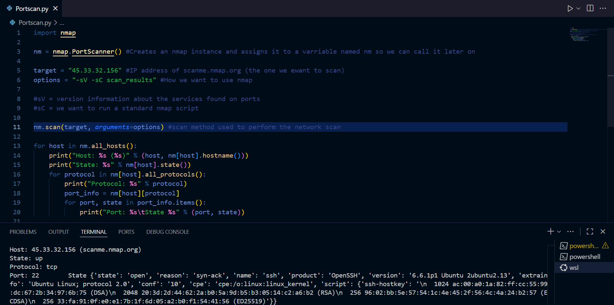

I built a simple Python port scanner after following a YouTube tutorial, but the most valuable part of the project was everything around the code: getting a Linux workflow running on Windows, setting up tools, and learning how to run and iterate on scripts cleanly inside a consistent environment.
WSL setup (what actually mattered)
The first step was getting a working Ubuntu terminal on my Windows machine using WSL.
My initial attempt using wsl --install produced errors, but installing Ubuntu explicitly
(for example wsl --install -d Ubuntu) worked reliably. After that, I could treat the environment like a
normal Ubuntu system: update packages, install tools, and follow Linux-based workflows without fighting Windows path
and dependency quirks.
For development, I used Visual Studio Code with WSL integration, so the editor and terminal operate “inside” Ubuntu. This keeps Python versions and dependencies consistent and avoids the usual pain of mixing Windows and Linux tooling.

Where the idea came from
I was looking for beginner-friendly security projects in Python and followed a tutorial walkthrough. The implementation approach is based on the original creator’s lesson (linked below). What I’m documenting here is the setup process, the workflow, and the practical takeaways I got from reproducing and experimenting with the project.
Tutorial reference: YouTube video.
What I learned
- On Ubuntu, you usually run scripts with
python3(not alwayspython). - Keeping projects inside the WSL filesystem avoids weird permission and path issues.
-
Installing tooling is straightforward in WSL:
sudo apt update, thensudo apt install nmap python3-nmap(and optionallysudo apt install python3-pip). - VS Code’s WSL workflow makes debugging and iteration feel like a normal Linux dev setup.
Ethics & permission
scanme.nmap.org.
Back to Projects.